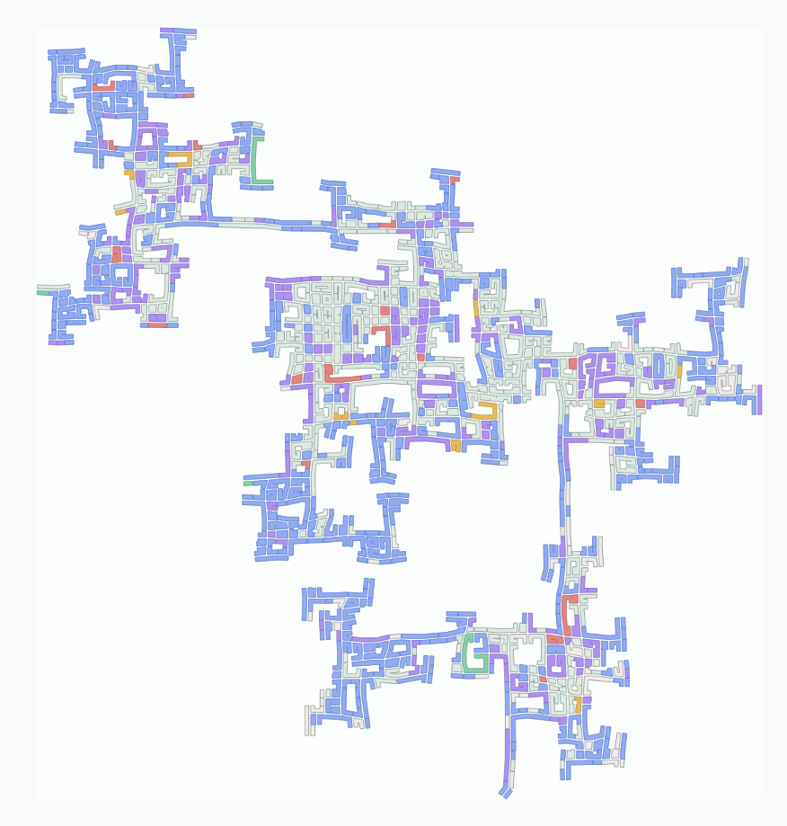
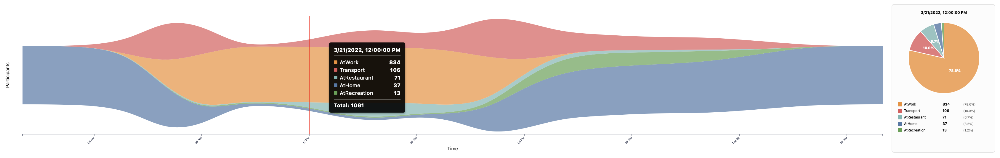
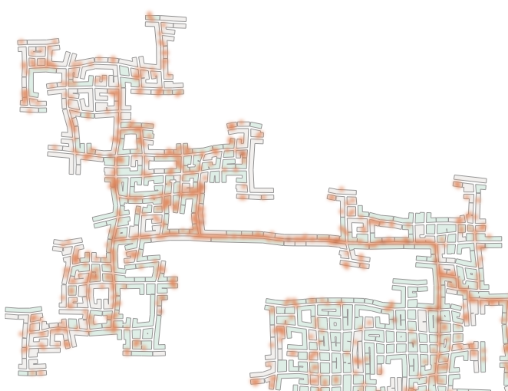
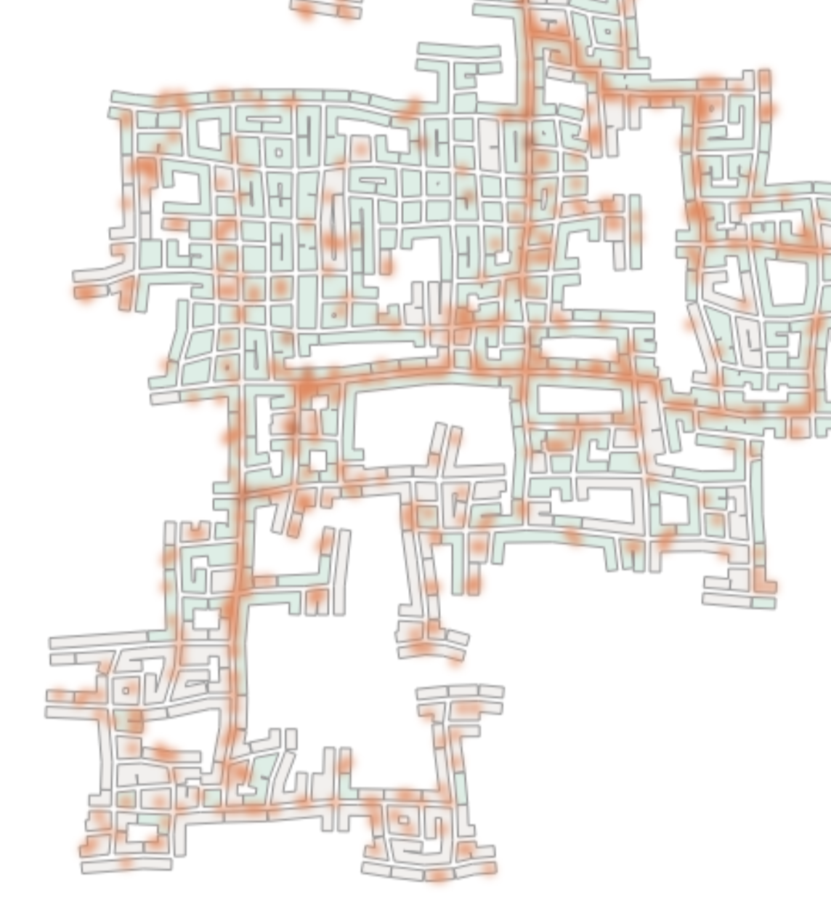
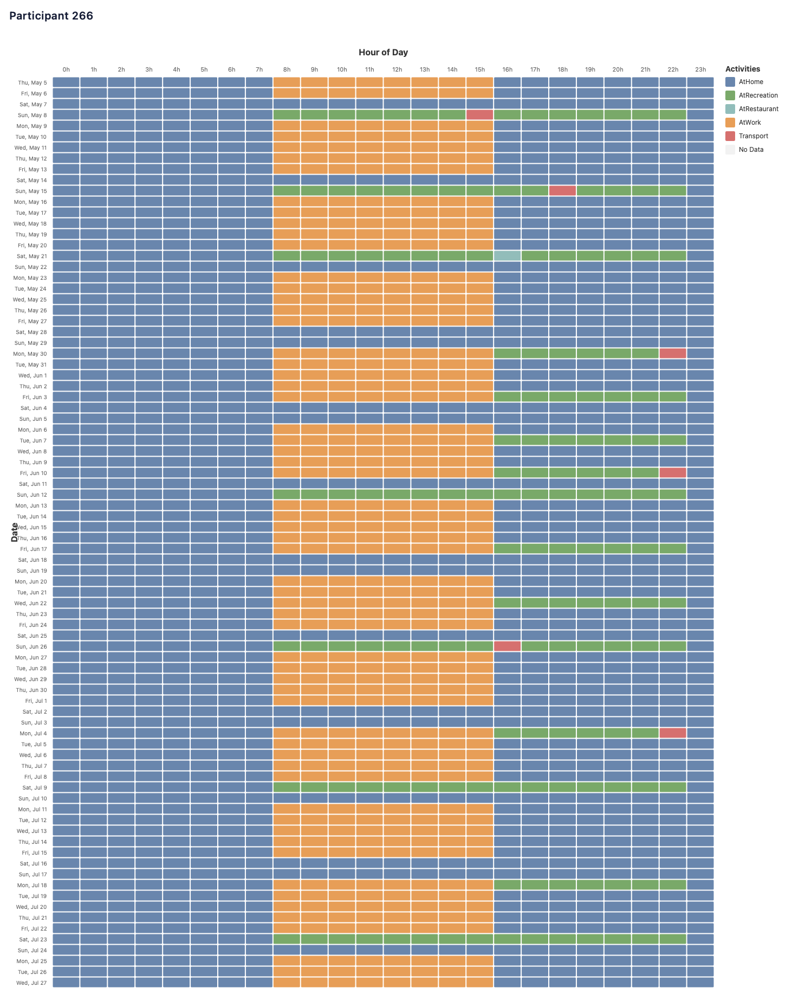
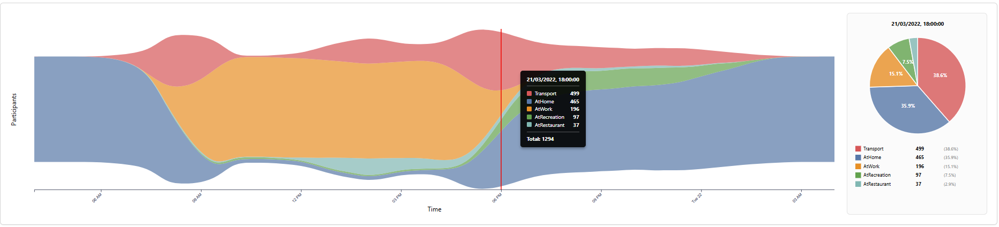

Entry Name: Data Visualization Group 5
VAST Challenge 2022
Challenge 2
Team Members:
Alberto Finardi, University of Luxembourg, alberto.finardi.001@student.uni.lu
Tommaso Crippa, University of Luxembourg, tommaso.crippa.001@student.uni.lu
Tom Gave, University of Luxembourg, tom.gave.001@student.uni.lu
Student Team: Yes
Tools Used:
d3
React
PostgreSQL
Docker
NodeJS
Bruno
Approximately how many hours were spent working on this submission in total? 40
Questions
1 - Assuming the volunteers are representative of the city's population, characterize the distinct areas of the city that you identify. For each area you identify, provide your rationale and supporting data. Limit your response to 10 images and 500 words.
Overview
The city extends within a square region mapped using a coordinate grid dynamically settable. Multiple distinct zones are identifiable through building type distribution, activity patterns, and movement corridors. Large undeveloped or inaccessible areas exist within the city boundaries, particularly in the north-east and south-west edges.

Figure 1.1: Overview map showing building type distribution across the city, highlighting residential (apartments, schools) and commercial (employers, restaurants, pubs) zones.
Downtown Commercial Core
The regions A1, B2 and C2 exhibit dominant commercial function, with high concentrations of employer buildings and eating venues supporting business activity. An additional zone at C3 shows notable ammount of commercial buildings, but only a single pub and few restaurants. This distribution is confirmed with the heatmap, showing concentrated activity during business hours in these zones.

Figure 1.2: Building type map filtered to show employers, restaurants, and pubs.

Figure 1.3: Activity density heatmap during business hours showing concentrated activity in downtown zones.
Residential Areas
Zones A1-2, B3-4, D2 and D4 are predominantly residential, characterized by high apartment density. This information is again confirmed with the heatmap, showing concentrated activity during evening hours in these zones.

Figure 1.4: Map filtered to apartments only.

Figure 1.5: Evening activity heatmap showing residential area activity in the residential zones.
Mixed Suburban Character
The peripheral zones (northwest, southeast) demonstrate mixed residential-commercial patterns, with residential dominance toward outer edges. Zones in the northwest features suburban residential on its western side with commercial activity eastward, notably connected to the city only via a single major route, creating potential infrastructure constraints. Zones in the southeast exhibits suburban housing with commercial activity on the city-facing (western) side.

Figure 1.6: Mixed-use activity areas in outer zones.
Movement Patterns and Connectivity
Movement patterns reveal distinct connecting roads that form edges between activity zones. A major east-west corridor connects the northwestern zones to the central downtown. The southern zone has limited connectivity via a single major route, similarly as the northwestern zone.

Figure 1.7: Morning rush hour activity showing movement patterns toward employment centers in the city center.
Summary
The residential-commercial distinction clearly emerges through building type analysis, with zones serving downtown functions while other provide housing. Mixed-use zones transition from commercial on their city-facing sides to residential at their peripheries. The boundary zones represent a critical infrastructure planning area due to high mixed-use density.
| Zone |
Primary Character |
Key Features |
Connectivity |
| North-West |
Mixed (residential west, commercial east) |
Northwest suburban, limited access |
Single major route |
| Central-north |
Commercial center |
Restaurants/pubs, peripheral activity |
Well-connected |
| Central-south |
Downtown core |
North: employment, South: residential |
Central hub |
| East |
Mixed suburban |
Northeast residential outskirts |
Good connectivity |
| South |
Mixed suburban |
Southeast apartments, some commerce |
Single major route |
2 - Where are the busiest areas in Engagement? Are there traffic bottlenecks that should be addressed? Explain your rationale. Limit your response to 10 images and 500 words.
Overview
Analyzing movement patterns reveals concentrated activity along specific corridors connecting residential and commercial zones. Temporal analysis shows distinct peak periods when roads experience maximum usage, creating potential bottlenecks that could benefit from infrastructure improvements.
Overall Activity Density
The heatmap of all participant locations throughout the study period reveals clear high-density zones. The busiest areas concentrate in downtown, with secondary activity centers on the northwest mixed zone and eastern residential-commercial zone. Major connecting corridors between these zones show sustained high usage throughout the day.
Figure 2.1. Business hours activity heatmap showing busiest areas during typical workday hours.
Rush Hour Movement Patterns
Morning rush hours (7-9 AM) exhibit concentrated movement from residential zones in the peripheral zones toward employment centers in downtown. The roads connecting these areas become primary bottlenecks, particularly the single connecting route to the northwest zone and the single major route to the southern zone.
Figure 2.2. Morning rush hour (7-9 AM) activity showing concentrated movement toward employment centers.
Evening rush hours (5-7 PM) reverse this pattern, with heavy traffic from commercial zones back to residential areas. The same corridors experience bidirectional bottlenecks, compounded by social activity beginning simultaneously as work ends.

Figure 2.3. Evening rush hour (5-7 PM) showing return traffic to residential zones plus social activity.
Activity Type Analysis
The streamgraph visualization reveals temporal patterns across a general day explaining the bottleneck. Work-related activity dominates weekday daytime hours (8 AM-6 PM), while social/recreation activities peak during evenings and weekends. Eating-related movement shows trimodal patterns around meal times, creating predictable congestion at 8 AM, 12 PM, and 6-7 PM.

Figure 2.4. Temporal distribution of activity modes showing work, social, and eating patterns throughout a day.
Critical Bottleneck Routes
Three critical bottlenecks emerge from the analysis:
Route 1 (Northwest Connector): The single major road connecting the northwest zone to the central city creates severe congestion during peak hours. This route serves a substantial residential and commercial population with no alternative paths, making it the most critical bottleneck in the city.

Figure 2.5. Northwest connector route showing heavy single-path dependency during morning commute.
Route 2 (Downtown Connector): In downtown we can also identify some smaller bottleneck routes, as most people tend to pass through these roads to reach their destination, leading to persistent congestion.

Figure 2.6. Central connector showing persistent congestion during peak hours.
Route 3 (Southern Connector): Roads connecting the southeastern zones to the central downtown create bottlenecks during both morning and evening rush hours, particularly where multiple residential areas converge.

Figure 2.7. Southern connector route showing bottlenecks during peak hours.
Temporal Congestion Patterns
Observing the heatmap on the weekend, the heatmap is much more uniform, not showing big bottlenecks. In general it's possible to see bigger clusters near pubs and restaurants, reflecting social activity patterns.

Figure 2.8. Weekend activity patterns showing more uniform distribution and social clusters.
Summary
The busiest areas concentrate in downtown with critical bottlenecks on routes connecting peripheral residential areas to this downtown core. The northwest connector represents the most severe single-point failure, while the downtown corridor experiences sustained congestion. Infrastructure improvements should prioritize creating alternative routes and distributing commercial activity to reduce pressure on these critical bottlenecks.
3 - Participants have given permission to have their daily routines captured. Choose two different participants with different routines and describe their daily patterns, with supporting evidence. Limit your response to 10 images and 500 words.
Overview
This section explores the daily routines of two participants with contrasting lifestyles, using visual analytics to highlight differences in travel, social engagement, and work-life balance. Two participants were selected displaying contrasting patterns: Participant 266 representing a socially active individual with short commutes and high joviality, and Participant 845 representing a long-distance commuter with limited social activity and lower joviality.

Figure 3.1. Shows a comparison between Participant 266 and Participant 845 in terms of travel distance, joviality, and social activity.
Participant 266: The Social Local
Participant 266 is a 32 years old person that exhibits significantly below-average travel distance, with 158.75 units done in March 2022, about 5 units per day, spending much less time commuting than typical participants. Their home and workplace are located in close proximity in the city center, enabling easy walking-distance commutes. They have one of the highest joviality scores (97.3%) and maintain robust social activity (18.3% of time).

Figure 3.2. Summary statistics for Participant 266 highlighting travel distance, joviality, and social activity.
The map of their activities reveals concentration in the southern portions of the city center. Their favored social and dining venues cluster near their residence, minimizing travel requirements. Notably, their typical routes avoid the major traffic bottlenecks identified in Question 2, likely contributing to their sustained high joviality.
The activity calendar provides detailed temporal insights across March 2022. Participant 266 displays highly regular weekday work patterns with consistent start and end times. Their work schedule shows minimal variation, appearing as solid blocks. Right after work they socialize near the neighborhood, occasionally needing transportation for not more than 1 hour. Weekend behavior varies, either socializing both days, only one day, or staying home.

Figure 3.3. Activity calendar for Participant 266 showing regular work patterns (orange) and contrasting weekend behavior with social activities (green) and home time (blue).
Participant 845: The Long-Distance Commuter
Participant 845 is a 40 year old person who presents a contrasting profile, spending 13.6% of his time traveling on average, substantially above the sample mean. Their home in the south of Engagement while his workplace is on the east side, necessitating long commutes traversing multiple bottleneck routes for 32,2 units per day (6 times more than Participant 266). They have below-average joviality and maintain limited social engagement, averaging only 5.2% of social activity on March 2022.

Figure 3.4. Summary statistics for Participant 845 highlighting travel distance, joviality, and social activity.
The map reveals the geographic challenges they face. The substantial distance between home (south) and work (east) requires traversing congested corridors identified as major bottlenecks. Social activities, when they occur, involve even longer journeys.
The activity calendar reveals their demanding daily routine. Weekday mornings begin with departure from home at 7:00 AM, followed by a 1-hour commute, arriving at work around 8:00 AM. They finish work around 16:00 PM, facing another extended commute that brings them home just after 17:00 PM. Most evenings are spent at home, with one or two social evenings per week.

Figure 3.5. Activity calendar for Participant 845 showing consistent long commutes (red), regular work blocks (orange), and limited social activity (green).
Summary
These two participants exemplify the spectrum of daily experiences in Engagement. Participant 266 benefits from proximity between home, work, and social venues, enabling an active social life with minimal travel burden. Participant 845 faces geographic constraints requiring extensive daily commuting through congested routes, limiting social opportunities and consuming significant time. These patterns underscore the importance of urban planning that considers residential-workplace proximity and transportation infrastructure in supporting quality of life.
4 - Over the span of the dataset, how do patterns change in the city change? Describe up to 10 significant changes, with supporting evidence. Limit your response to 10 images and 500 words.
Overview
Analysis of the 15-month dataset reveals that most significant pattern changes occur during an initial adjustment period, after which the city exhibits remarkable stability. The most notable temporal evolution appears in the opening weeks, with subsequent months showing persistent behavioral patterns at both individual and population levels, interrupted only by minor cyclical variations.
Change 1: Initial Adjustment Period and Activity Normalization
The study's opening 60 days reveal the most substantial behavioral shift. Traffic volumes begin elevated, then progressively diminish over two months before reaching stable levels. This indicates an initial novelty effect that gradually normalizes.
Change 2: Early Social Activity Surge
Activity calendars show concentrated social engagement during the opening 3-4 weeks. Participants such as 266 and 797 demonstrate elevated social event frequency before transitioning to sustainable patterns. This contributes to elevated traffic in Change 1, since social activities require greater travel distances.

Figure 4.1. Activity calendar for Participant 797 showing intense social activity in opening weeks before stabilizing to regular patterns.
Change 3: Cyclical Behavioral Variations
Following stabilization, participants exhibit recurring fluctuations in social and dining behaviors. These manifest as episodic activity bursts in weekend and evening routines. Participant 744 shows multiple periods of behavioral adjustment, suggesting lifestyle adaptations or seasonal influences.

Figure 4.2. Activity calendar for Participant 744 showing periodic bursts of behavioral change in social and eating activities.
Change 4: Venue Preference Consolidation
Early weeks show eating and social activities dispersed across numerous venues, but concentration increases progressively as participants discover preferred locations.
Figure 4.3. Heatmap comparison of social activity concentration between March and September, initially sparse and later concentrated.
Pattern Stability: Interest Group Behavioral Convergence
The 10 interest groups (A-J) exhibit nearly identical spatial and temporal patterns throughout the study. This homogeneity indicates that urban spatial constraints override demographic differences.

Figure 4.4. Spatial distribution comparison across different interest groups revealing consistent similar patterns throughout the study period.
Pattern Stability: Activity Type Composition Remains Consistent
Activity type proportions remain stable after initial adjustment. While participant numbers decrease over time, the percentage distribution of activities remains constant, indicating established behavioral norms persist despite attrition.

Figure 4.5. Streamgraph comparison across three study periods showing stable activity type proportions over 15 months despite declining participant numbers.
Pattern Stability: Individual Behavioral Signature Persistence
Despite early population-level changes, individuals demonstrate remarkable routine consistency throughout all 15 months. Participants maintain distinctive "behavioral fingerprints" - Participant 266 shows consistent Wednesday evening social peaks, while participant 744 exhibits Friday-Saturday late-night patterns.

Figure 4.6. Activity calendar for Participant 266 showing consistent Wednesday evening social patterns maintained across the study duration.
Temporal Pattern: Daily Activity Diversity Peaks at Evening Transition
The streamgraph reveals a consistent daily pattern: activity diversity peaks at 18:00 across all months, when work diminishes but no single leisure activity dominates. This corresponds to central mixed-use zones. In contrast, morning hours show activity homogeneity with work-related movement overwhelming all other activities.

Figure 4.7. Diverse activity patterns at 18:00 showing simultaneous occurrence of multiple activity types in central mixed-use zones - a pattern consistent across all study months.
Summary
The most significant changes concentrate in an initial 60-day adjustment period with elevated traffic and social activity. Following this, the city demonstrates remarkable stability: individual routines persist, interest groups show behavioral homogeneity, and activity composition remains consistent despite participant attrition. The primary post-adjustment evolution is venue preference consolidation. The combination of temporal, spatial, and individual visualizations reveals that urban patterns exhibit initial volatility but then stabilize into persistent patterns shaped by spatial constraints and social norms.